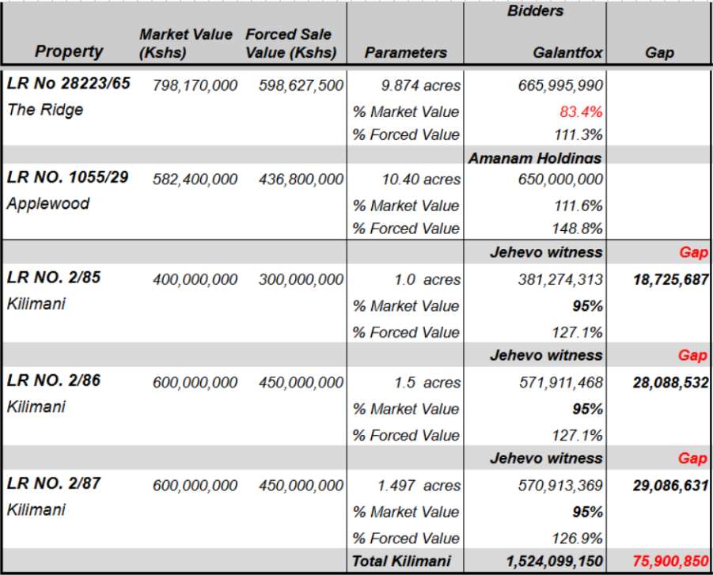

The Developer has filed a formal application with the judiciary accusing the presiding judge of executing an ex parte(one-sided) order requested by the Official Receiver.
Please review the attached documents carefully to understand how this escalating legal battle may impact the timeline for asset recovery and debt settlement.
The Official Receiver filed an affidavit on May 21, 2026, immediately prior to the court hearing on May 22, 2026. This report introduces critical asset valuation data that was neither disclosed during the creditors' meeting nor provided to the court before the previous mention on March 25, 2026.
Additionally, this affidavit fails to disclose the outcome of the recently concluded bidding process, which is information of critical importance to the creditors. While no formal deliberations have occurred yet, we must leverage the newly available data to interrogate whether the bidding resolts satisfy the market test. Specifically, we must evaluate the process regarding market competition, price discovery, and the fiduciary duties owed to creditors.
Under Section 443(1) of the Insolvency Act, 2015, this statutory duty strictly requires that asset realizations be maximized for the absolute benefit of the creditors.
From the information presently available, it appears that:

The video focuses on a court hearing regarding a dispute over property verification and a potential auction involving homeowners, a bank (SBM), and an official receiver. Key topics discussed include:.
"Pay close attention to the judge's remarks on verification and data protection communication protocal.".